러시아 순양함 모스크바 침몰의 미스터리
게시: 2022-04-21T06:30:11+09:00
<러시아 순양함 모스크바 침몰의 미스터리> 대함 미쓸에 얻어맞지 않기 위해서 군함에는 다양한 요격 미쓸과 CIWS 등을 갖추지만 가장 기본적인 것은 빠른 속도. 군함이 빨라야 시속 55km/h를 넘기 어려운데 음속으로 날아오는 미쓸을 피할 수 있는가? 군함이 빨라야 하는 이유는 지구가 둥글기 때문. 아무리 강력한 레이더가 있다고 해도 어지간한 높이에 달린 레이더가 볼 수 있는 수평선까지의 거리는 30km 남짓. 그러니 해안 레이더 사이트에서 50km 이상 떨어진 군함은 대략 안심해도 됨. 아무리 사정거리 300km의 지대함 미쓸이 있다고 해도, 뭐가 보여야 쏠 것 아닌가? 하지만 적 항공기가 하늘에서 look-down한다면? 그 항공기가 Tu-95나 Tu-22처럼 장거리 대함 미쓸을 갖춘 것이 아니라고 해도, 그 항공기가 군함의 정확한 좌표를 지대함 미쓸팀에게 알려주면 매우 곤란.
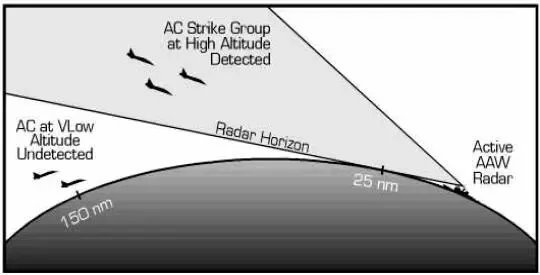
대함 미쓸은 군함이 있을 거라고 추정되는 지역에 접근하면 자체 seeker를 가동하여 목표물을 찾음. 따라서 그 미쓸이 날아올 때까지 씨커의 사각 밖으로 재빨리 이동하면 잡기가 힘듬. 장거리 대함 미쓸이 음속으로 날아와도 (가령 이번에 우크라이나가 쏜 Neptune은 최대 사거리 약 280km이고 아음속), 해안에서 100km 떨어진 지역에 있던 순양함까지 날아오는데는 약 5분이 걸림. 5분 동안 해당 위치에서 얼마나 멀리 빠져나갔느냐가 순양함의 명줄을 결정. 20노트면 3.1km, 30노트면 4.6km 벗어남. 물론 능력 있는 항공기라면 순양함이 어느 방향으로 몇 노트의 속력으로 항진 중이었는지도 보고하겠고, 순양함이 도중에 방향과 속도를 바꿀 수도 있으므로 계산이 복잡. (실제로는 대함 미쓸이 목표물을 못찾을 경우 미리 입력된 방식에 따라 좌우 일대를 열심히 방향을 바꿔가며 찾기 때문에 속력 하나만으로 대함 미쓸의 탐지 범위를 벗어나기는 어렵다고...) 중궈가 자랑하는 대함탄도탄 DF-21로 과연 미항공모함을 잡을 수 있느냐에 대해 회의적인 이유도 바로 미해군 핵항모들은 최고 속도가 30노트가 넘기 때문.
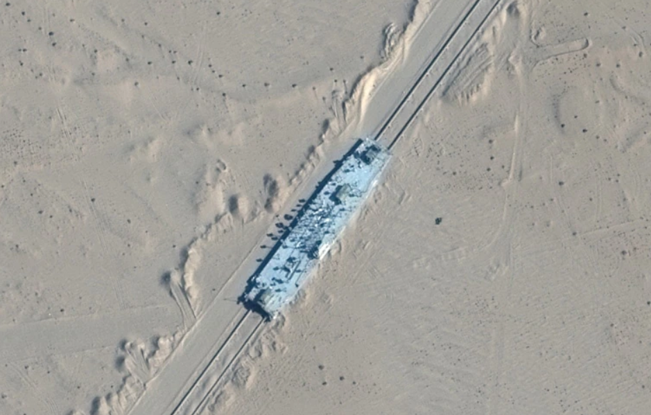
(최근 본 기사 중에 이해가 안 갔던 것이, 중국이 신장 사막 지대에 미해군 항모 비슷한 타겟 만들어놓고 대함탄도탄으로 때리는 훈련을 한다는 뉴스. 움직이지 않는 타겟을 대상으로 사격 훈련을 한다는 것이 의미가 있나 싶었는데, 알고 보니 중국 애들도 바보가 아니기 때문에 저렇게 레일을 만들어놓고 꽤 빠른 속도로 움직이는 타겟을 만든 것인 모양. 그나저나 항모 비행갑판 크기의 모의 타겟을 레일 위에 올려놓고 탄도탄 사격 훈련을 한다니... 과연 대륙의 스케일...) 그런데 가장 결정적인 것은 항공기가 어떻게 순양함을 찾느냐 하는 것. 큰 순양함이라고 해도 넓은 바다에 비하면 깨알같은 존재라서, 일반적인 공대공 레이더만 장착한 전투기가 우연히 지나가다 찾기를 바란다는 것은 너무 전쟁을 쉽게 하는 것임. 거친 파도가 치는 넓은 바다 위에서 수상함을 찾는 감시 레이더는 비싸고 크고 무겁고 전기를 많이 먹음. 그래서 미국이나 중국이나 일본이나 영국이나 한국이나 생각있는 해군은 (겉보기에는 민간항공기처럼 보이는) 포세이돈이니 오라이언이니 하는 해양감시정찰기들에 돈을 쏟아붓는 것. 근데 우크라이나에겐 포세이돈도 오라이언도 없음. 과연 누가 우크라이나 해변의 넵튠 발사팀에게 모스크바의 위치를 알려주었을까? ** 사진은 포클랜드 전쟁에서 활약한 영국 공군의 Hawker Siddeley Nimrod. 어떡해... 못생겼어...
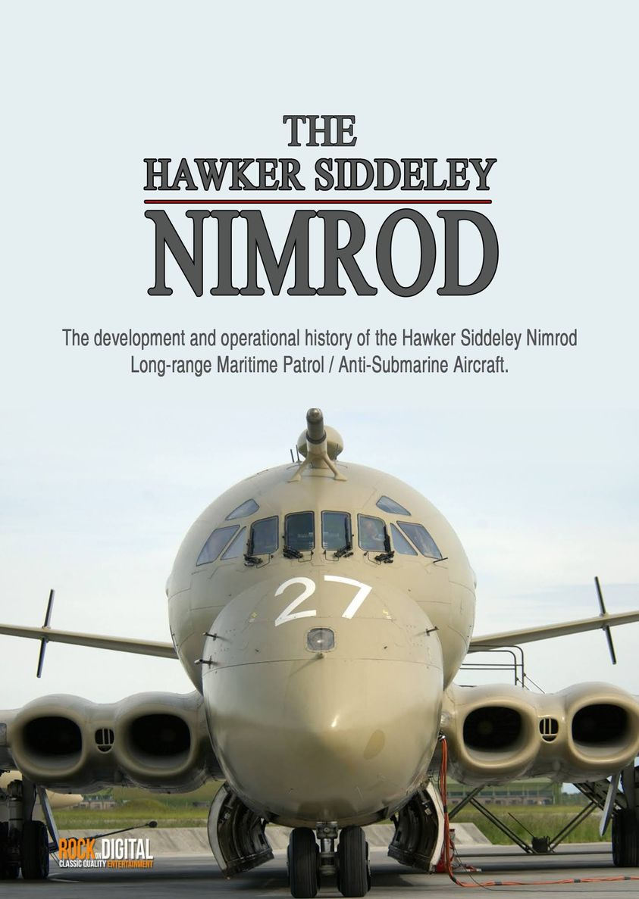
<누가 RTS Moskva의 위치를 밀고했나> 현재로서는 알 수 없고 아마 30년 정도 지나야 밝혀지지 않을까 함. 그런데 오뎃사 바깥쪽 바다는 미군의 글로벌 호크나 리퍼 등의 무인 감시기는 물론 해양정찰기 P-8 포세이돈도 활발히 활약하는 장소. 친러 매체에서는 '무지렁이 우크라이나가 쏜 미쓸이 아니라 미군 포세이돈이 쏜 대함 미쓸이나 NATO 잠수함이 쏜 미쓸에 맞았을 수도'라고 군불을 지피는 중. 저기에 캡춰한 기사에서는 미군 포세이돈이 근처에서 목격되었으니 NATO의 잠수함에 의한 타격일 수도 있다고 GR거리지만 흑해 안에는 터키와 러시아 이외의 잠수함은 들어갈 수가 없음. 이 모든 것이 1934년 Montreux 조약 때문. 들어가려면 미리 터키에게 허락을 맡고 부상해서 보스포러스 해협을 통과해야 함. 미군 핵잠함이 미쳤다고 그런 짓을 하겠나.
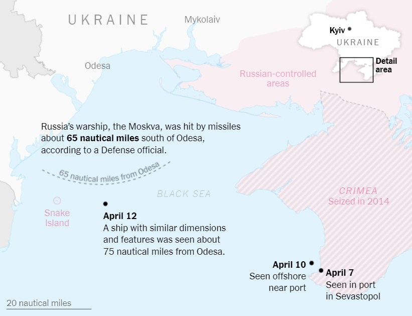
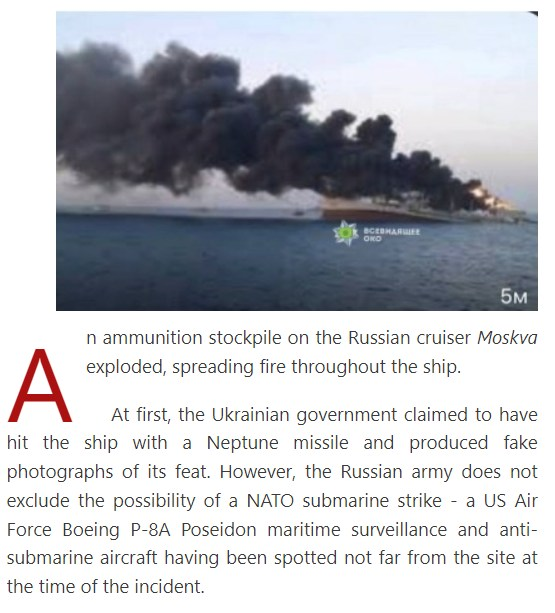
<근데 미군기는 어디서 날아오는 것인가> 흑해에 미군 항공기가 꽤 많이 떠있는 것은 알겠으나, 이들은 대체 어디서 날아오는 것일까? 폴란드에서 뜨나? 놀랍게도 약 2000km 떨어진 지중해의 시칠리아 섬. 34시간 이상의 비행시간을 자랑하는 RQ-4 Global Hawk는 물론이고, 체공시간이 14시간 정도 밖에 안 되는 MQ-9 Reaper도 찍턴이 가능한 거리라고.
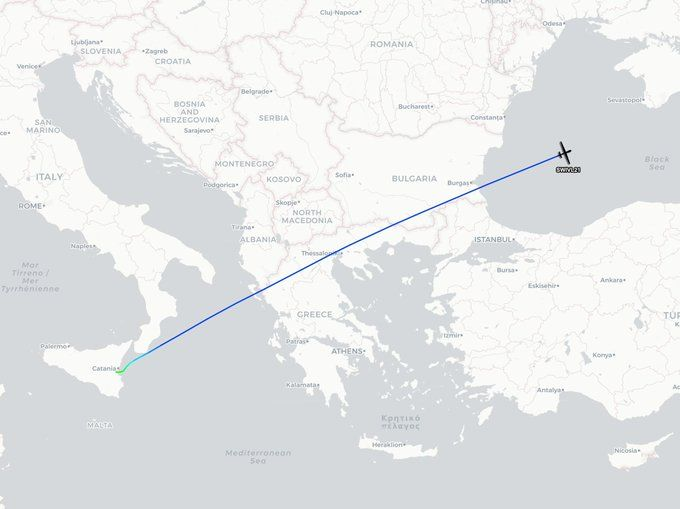
<경항모들의 주임무> 영국의 HMS Queen Elizabeth(6만4천톤, 32노트)나 러시아의 Kuznetsov (5만3천톤, 29노트)가 경항모인가? 그건 모르겠으나 둘다 미해군의 super-carrier와는 거리가 멀고 또 둘다 캐터펄트가 없어서 스키점프 램프(ramp)를 장착했으니 그냥 경항모로 부를 수 있음.
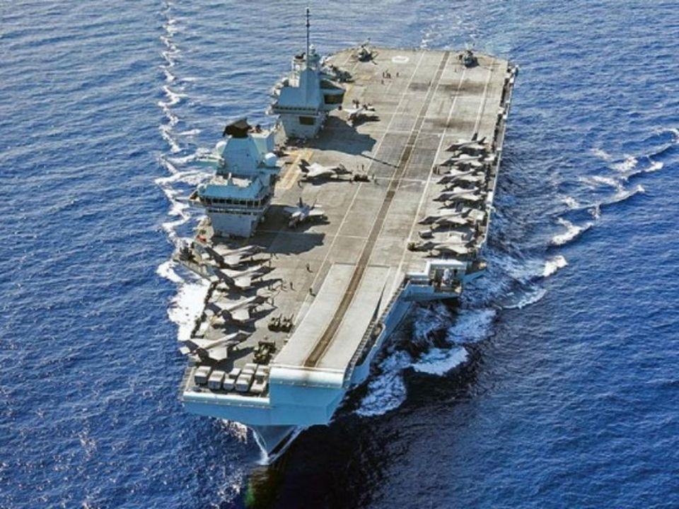
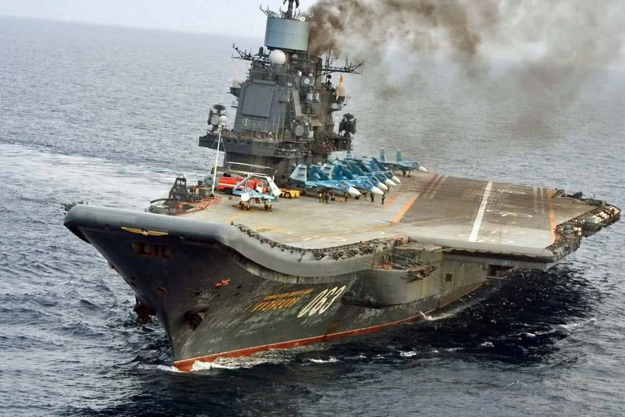
돈도 없는 영국이나 러시아 같은 나라들이 굳이 항모를 가지는 가장 큰 목적은 '군사력의 원거리 투사'. 간단히 말해 먼나라 침공. 그러니 당연히 폭탄 투하와 공대지 미쓸 발사 등 지상 및 해상 목표물의 타격이 주된 임무일 것 같음. 그러나 퀸엘리자베스나 쿠즈네초프나 운용 교리를 보면 이들의 주임무는 그냥 '제공권 확보'. 원래 함재기는 짧은 갑판 활주로에서 이착함을 해야 하므로 가볍게 날아올라야 해서 기체 가격은 더럽게 비싸지만 무장 및 연료 탑재 용량이 떨어지고 모든 성능 측면에서 지상발진 공군기들에 비해 미흡함. 그런데 그 주임무는 그렇게 우월한 지상발진 적 공군기들로부터 아군 함대를 지키는 것. 1982년 포클랜드 전쟁 때에도 딱 그 상황이었음. 영미의 군사전문가들은 모두 속도와 무장 측면에서 크게 떨어지는 Harrier 전투기들은 지상에서 발진해 날아올 아르헨티나 공군의 미라쥬 전투기에게 상대가 안 될 거라고 보았음.
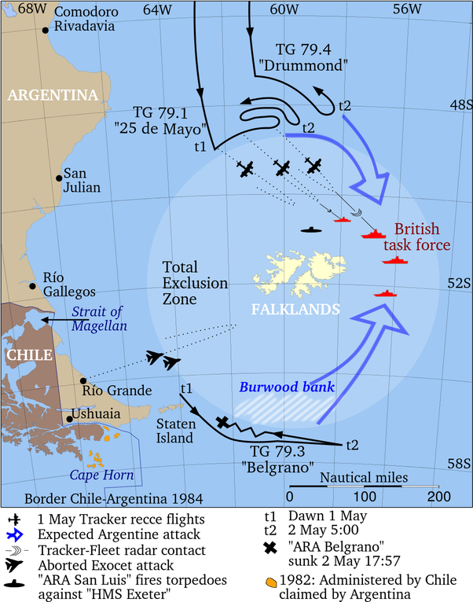
경항모의 주임무가 제공권 확보인 이유는 군함이 바다 위에서 살아남기 위해서는 무엇보다도 정확한 위치를 들키지 않아야 한다는 것 때문. 이건 위성이 모든 것을 감시하는 현대에도 통하는 이야기. 위성이 실시간으로 목표 함정을 포착하고 그 위치, 속도와 이동 방향까지 추적해줄 수는 없기 때문. 따라서 함대 사방 300km 주변 상공에서 적 항공기들이 얼씬거리지 않도록 막아내기만 해도 기본적으로 성공. (물론 그걸 또 위협하는 것이 잠수함.) WW2 때의 호위항모들의 주임무도 대잠전과 함께 독일군의 장거리 해상정찰기 Focke-Wulf Fw 200 Condor를 쫓아내는 것. 느린 U-Boat들이 자체적으로 호위선단의 위치를 포착하는 것은 쉽지 않기 때문에 독일군은 장거리 해상정찰기를 통해 그 위치를 파악하고 U-Boat들에게 알려줌. <해양정찰기의 원조?> 영국의 Nimrod도 미국의 Poseidon도 모두 민간 여객기를 개조해 만든 해양정찰기. 이런 전통(?) 스타트를 끊은 것이 WW2 당시 독일의 Focke-Wulf Fw 200 Condor (사진1)
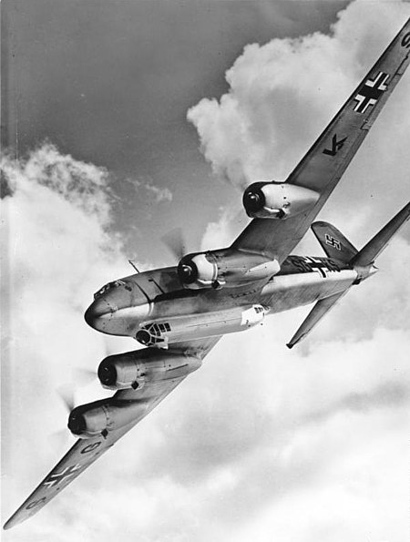
1938년 세계최초로 베를린-뉴욕 구간을 논스톱으로 비행한 여객기인 콘도르는 전쟁이 발발하자 곧 해양정찰기로 개조되어 북해와 대서양을 맴돌며 연합군의 군함과 수송선의 위치를 발견하는 족족 U-boat 떼에게 고자질. 영국해군은 이에 대응하고자 캐퍼털트를 장착하여 전투기를 이함시킬 수 있는 상선을 만들었고 (CAM, catapult aircraft merchant ship, 사진2) 실제로 1941년 이에 의해 최초로 격추된 독일 항공기가 바로 콘도르. 뿐만 아니라 미국이 WW2에 참전한 이후 미육군항공대가 아이슬란드 근해에서 최초로 격추한 독일 항공기도 콘도르.
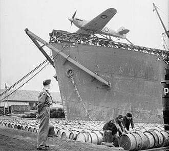
만들어진 대수가 276대에 불과했는데도 얼마나 빨빨거리며 날아다녔는지 1941년 영국의 호위항모 HMS Audacity 한 척이 대서양 횡단을 3번 할 때 그 함재 전투기 6대가 격추한 콘도르가 무려 7대. 스탈린그라드에 포위된 독일군에게 보급품 수송에 참여하기도 했고, 나중에 히틀러의 전용기가 되기도 함.